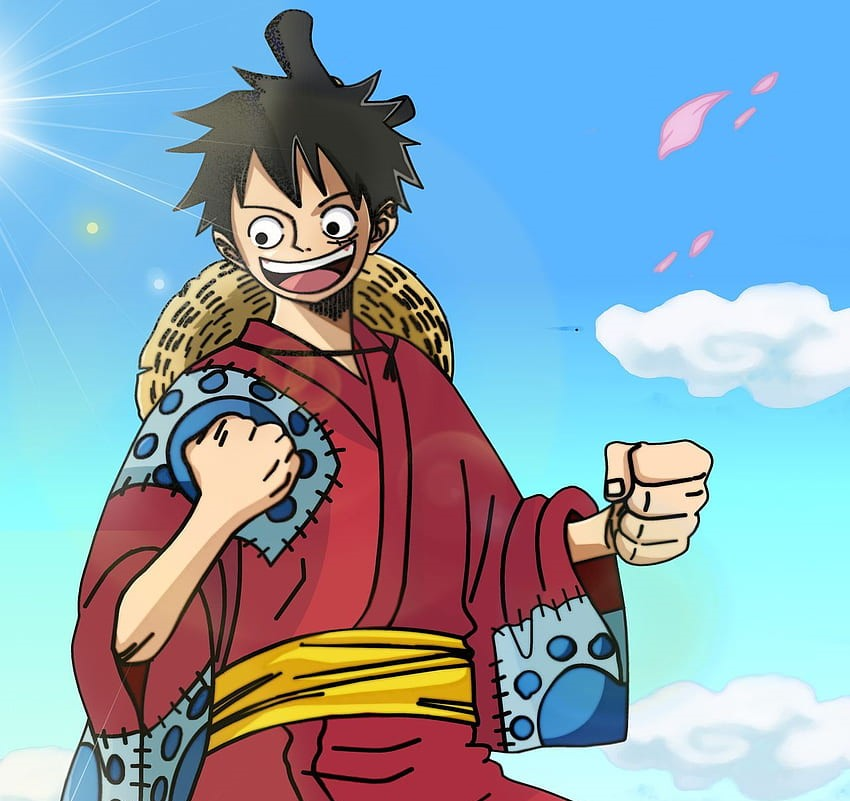
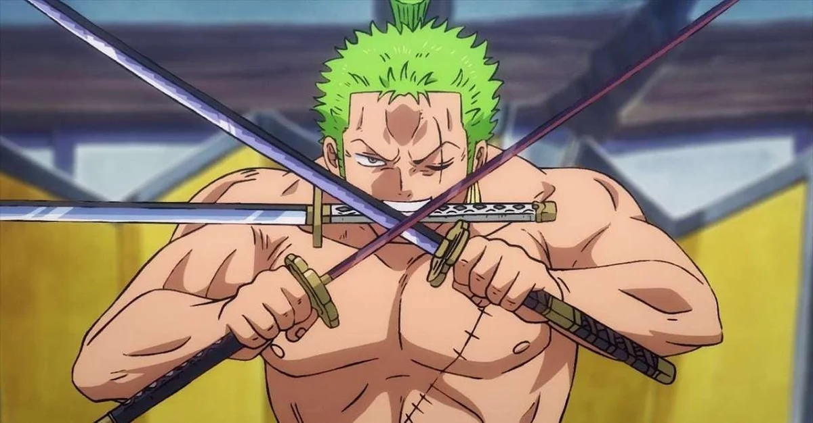
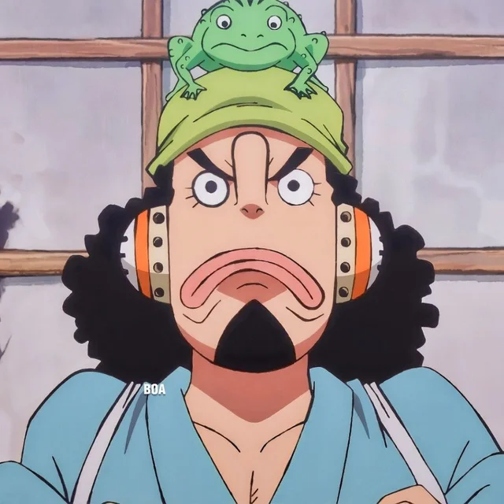
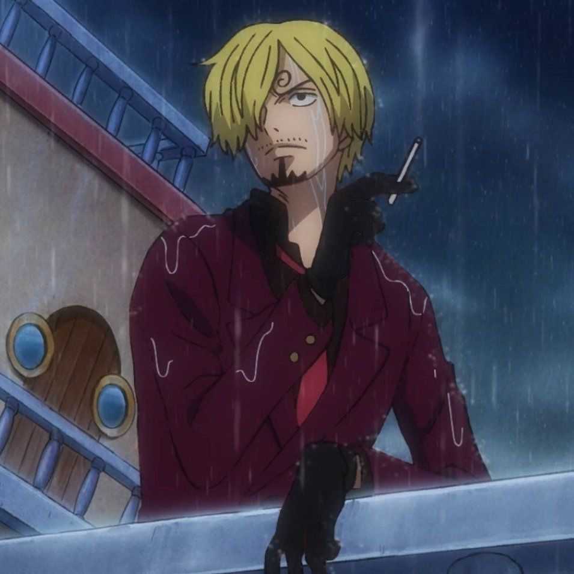
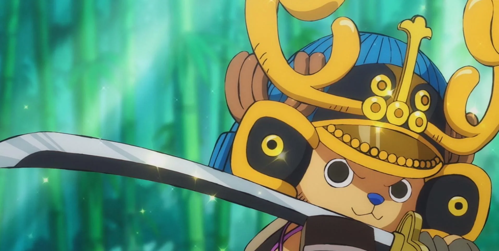
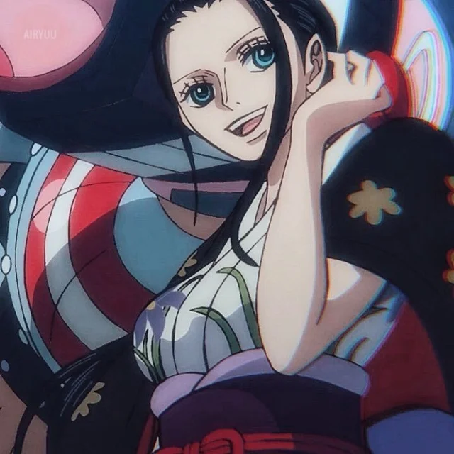
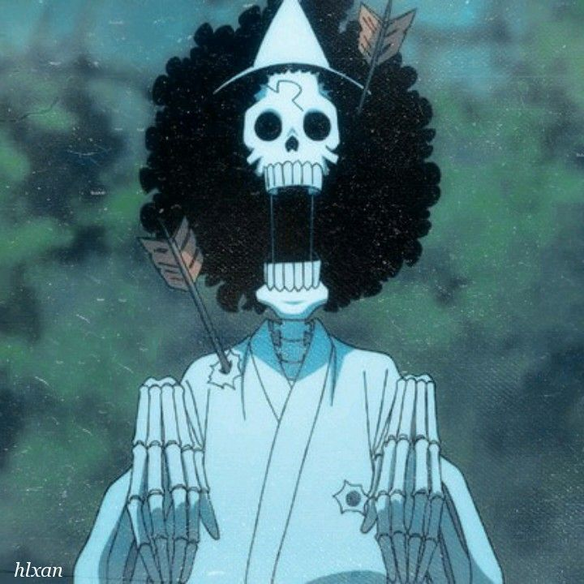

Introduction
Prepare to embark on an extraordinary journey with One Piece, an anime and manga series that
has captured the hearts of millions worldwide. If you're a young adult seeking an immersive
and richly layered storytelling experience, look no further. One Piece offers an expansive
and enthralling plot, a diverse and endearing cast of characters, and a profound exploration
of themes like friendship, justice, and the pursuit of dreams. Get ready to set sail on a
voyage that will leave you breathless and yearning for more.
Plot
One Piece centers around Monkey D. Luffy, a rubber-powered pirate with an insatiable appetite
for adventure. Inspired by his childhood hero, the legendary Pirate King Gol D. Roger,
Luffy sets out to assemble a crew and find the elusive treasure known as the One Piece,
which grants the finder the title of Pirate King. Throughout their journey, Luffy and his
crew, known as the Straw Hat Pirates, traverse treacherous seas, encounter formidable
enemies, and unravel the mysteries of the Grand Line—a dangerous and unpredictable stretch
of ocean.
Main Characters
| The Strawhat Pirates |
|
|
|  |
 |
 |
Monkey D. Luffy: The charismatic captain with a heart of gold.
Luffy possesses the power of the Gum-Gum Fruit, which grants him elastic abilities.
His unwavering determination, infectious optimism, and unbreakable bond with his
crew make him an inspiring and lovable protagonist. |
Roronoa Zoro: The skilled swordsman with a dream to become the greatest swordsman
in the world. Zoro's unwavering loyalty to Luffy, his unmatched swordsmanship,
and his strict personal code of honor make him a formidable and iconic member of
the crew. |
Nami: The talented navigator with a knack for thievery. Nami's sharp intellect,
navigation skills, and expertise in manipulating the weather through her
Clima-Tact prove invaluable to the crew. Behind her tough exterior lies a
compassionate heart driven by a desire to protect her loved ones. |
|  |
 |
 |
Usopp: The charismatic sharpshooter and storyteller. Usopp's talent for
storytelling often blurs the line between truth and fiction. Though initially
timid, his bravery and resourcefulness shine through when the crew faces adversity. |
Sanji: The suave chef and hopeless romantic. Sanji's culinary skills are matched
only by his impeccable fighting abilities. His unwavering dedication to chivalry
and his passion for beautiful women add a unique flavor to the crew dynamics. |
Tony Tony Chopper: A reindeer with the ability to transform into a human, thanks
to the Human-Human Fruit. Chopper serves as the Straw Hat Pirates' doctor and
mascot, bringing both cuteness and ferocity to the crew with his transformations. |
|  |
 |
 |
Nico Robin: The enigmatic archaeologist with a dark past. Robin possesses the
knowledge of ancient civilizations and the ability to read Poneglyphs, ancient
texts that reveal the truth about the world's history. Her calm demeanor,
intelligence, and unwavering loyalty make her an integral member of the crew. |
Franky: The shipwright with a knack for invention. Franky's expertise in
shipbuilding and his cyborg enhancements contribute not only to the crew's
survival but also to their dreams of traversing the Grand Line. |
Brook: The charismatic musician and swordsman who also happens to be a living
skeleton. Brook's soulful music, incredible swordsmanship, and unwavering loyalty
to his friends bring joy and depth to the crew. |
Summary from East Blue till Wano Arc
The journey begins in the East Blue, where Luffy forms his crew and sets sail. The Straw Hat
Pirates navigate through the Baratie, confront the tyrannical Arlong, face the powerful
Shichibukai, venture into the perilous Alabasta Desert, and uncover the secrets of the Enies
Lobby. They clash with the infamous Warlord of the Sea, Gecko Moria, encounter the majestic
Whitebeard Pirates during the Marineford War, explore the mysterious Skypiea, and challenge
the tyrannical rule of the Yonko, Big Mom and Kaido, in the Wano arc.
Conclusion
One Piece is an unparalleled masterpiece that weaves together a compelling plot, vibrant
characters, and thought-provoking themes. It celebrates the power of friendship, the pursuit
of dreams, and the resilience of the human spirit. From its captivating world-building to
its exhilarating battles, One Piece offers an immersive experience that transcends
generations. Whether you're seeking thrilling adventures, heartfelt moments, or epic
confrontations, One Piece has it all. So, grab your crew, hoist the Jolly Roger, and set
sail on this unforgettable journey. Don't miss out on the grand odyssey that is One
Piece—it's a treasure worth discovering!